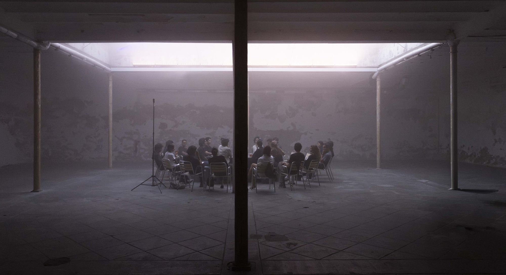
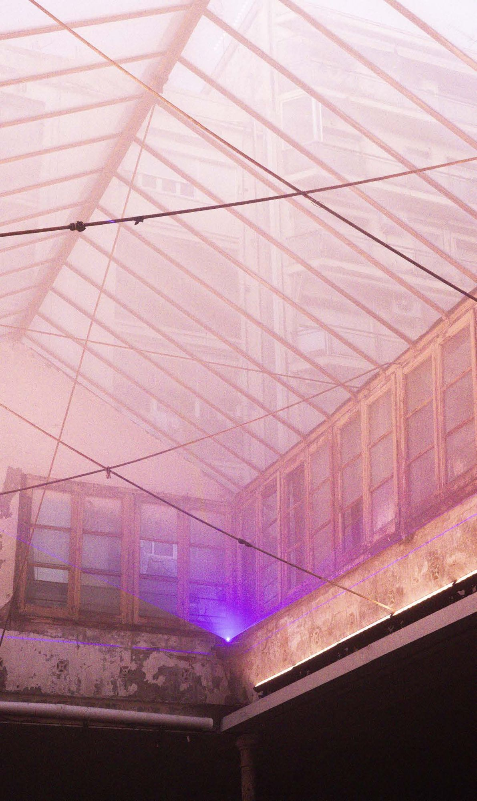
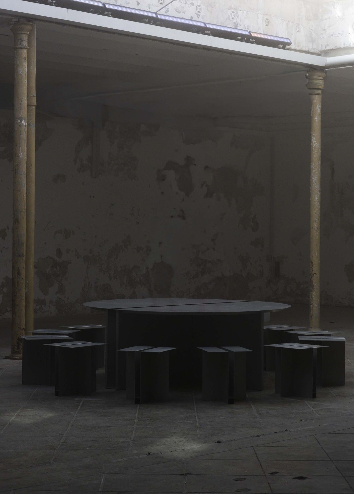
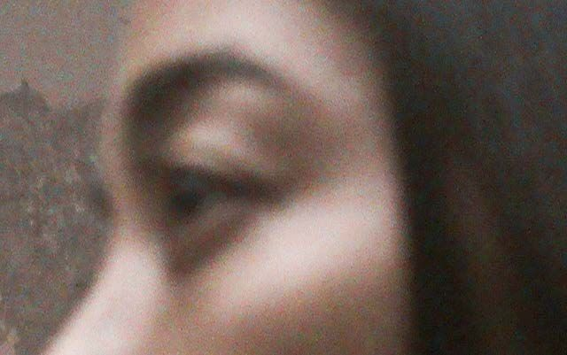
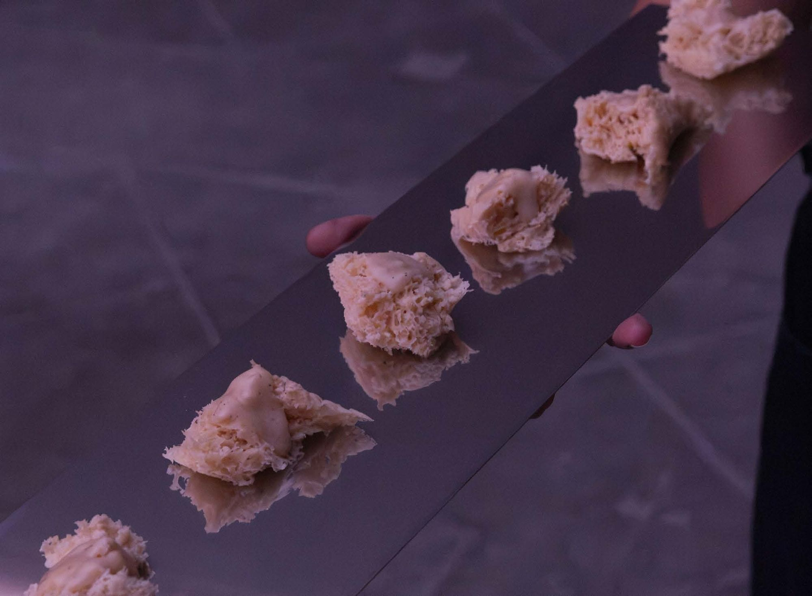
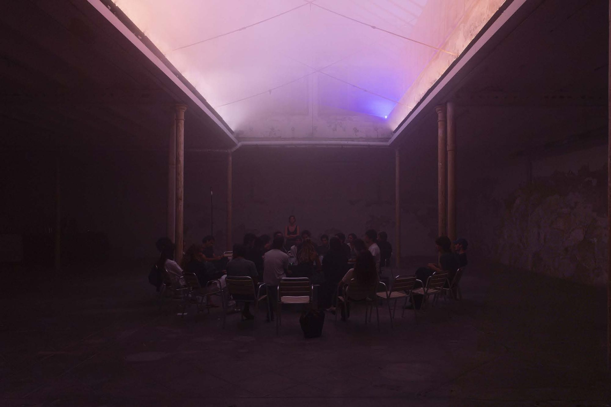
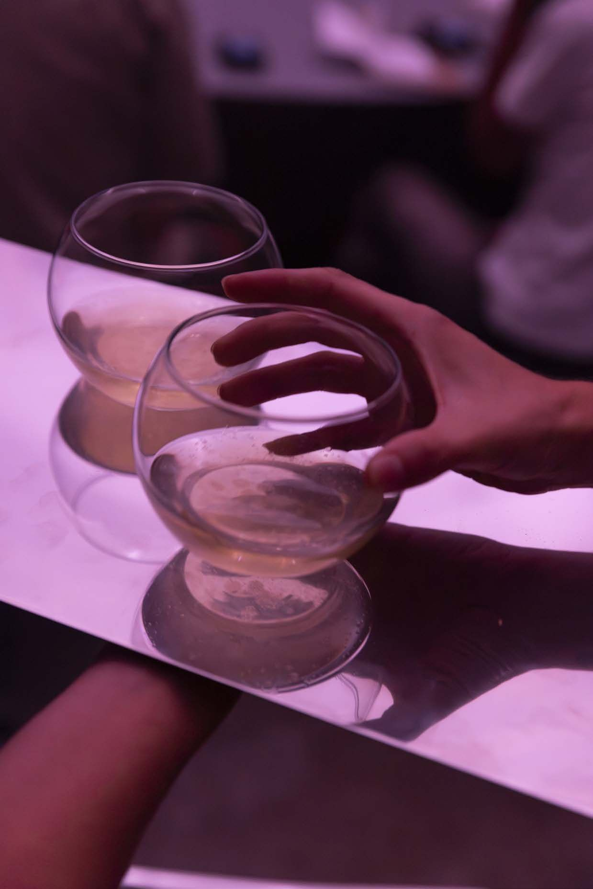
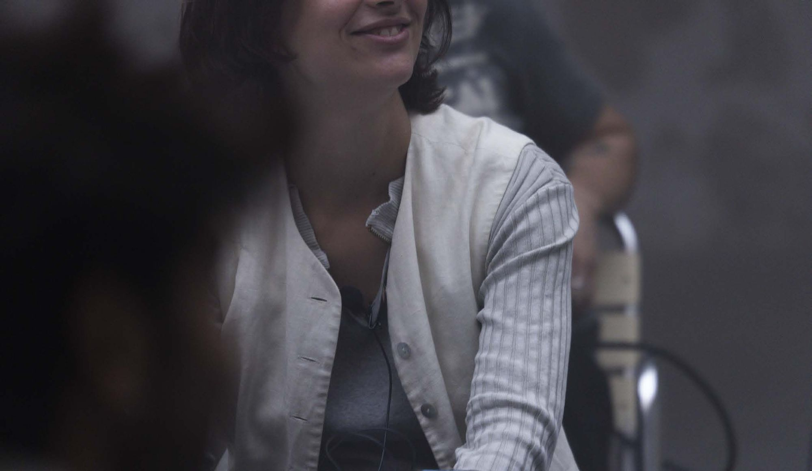
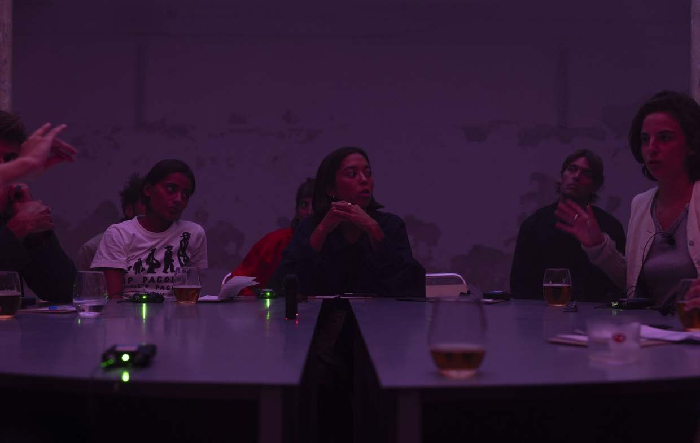

PUNK
A conversation night with no stage and no panel, built around one table. Concept, research, speakers, space, identity and hosting were all led from start to finish. In September 2026, thirty people gathered under an installation by Óscar Zabala to talk about truth and perception.
Each table pairs an artist, a thinker and a practitioner, and each night feeds an artist’s commission. The first edition led to new collaborations, a strategic foresight report and funding for the next editions.
- Role
- Creative lead and host (concept, research, art direction, identity, newsletter)
- With
- Logistics and budget by Lucas Lozano. Installation by Óscar Zabala, produced by Landscapes. Table and stools by Gonzalo Belil. Food and drink by TRAMA. Video by Carlo Marcenaro. Photography by Nereis F. Rodríguez and JP Bonino.








